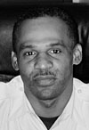

Vernon Duke, Head of Security


The safe passage of Hollywood's stars, as well as
studio employees, through Sunrise Studios is the sole
responsibility of Mr. Vernon Duke,
a former secret
service agent for President John F. Kennedy, Senator
Robert Kennedy, and civil rights activist Martin Luther
King. As the
head of Sunrise Security, Mr. Duke
supervises a vast surveillance and central electronic
locking system, one of the most sophisticated
in the
Griffith Park area. As a result, there is nothing that
happens at Sunrise that is not witnessed by Mr. Duke's
watchful eye.
Vernon plans to retire next year for
cataract surgery. Good luck, Vernon!